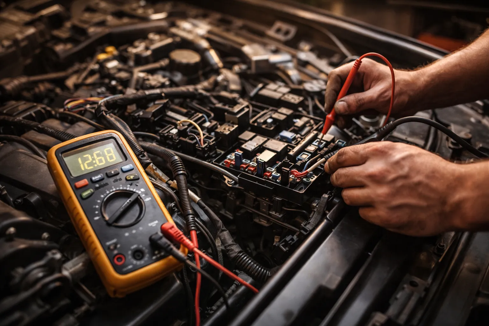
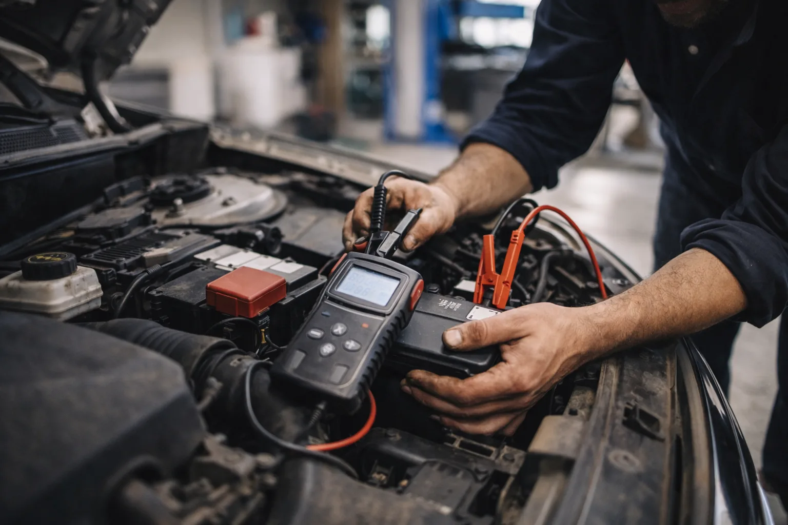

>Start uw auto niet meer? Batterijlampje aan? Startmotor die 's ochtends moeite heeft? Bij DMT AUTOGROUP testen, diagnosticeren en vervangen we uw batterij — alle merken, inclusief AGM- en EFB-batterijen voor Start-Stop voertuigen. VAG-batterijcodering inbegrepen.
De batterij die zonder waarschuwing uitvalt, is een mythe. Ze waarschuwt wel degelijk. De motor die 's ochtends aarzelt bij het starten. De koplampen die dimmen bij stationair. De Start-Stop die niet meer werkt. De elektrische ramen die trager omhooggaan. Het zijn signalen. Het probleem is dat de meeste mensen ze niet opmerken — tot de ochtend dat de auto helemaal niet meer start.
We testen uw batterij met een professionele tester die drie dingen meet: de spanning (moet boven 12,4V zijn in rust), de CCA-capaciteit (Cold Cranking Amps — het koude startvermogen), en de algemene gezondheidsstatus in percentage. De test duurt 5 minuten en geeft u een duidelijk antwoord: uw batterij is goed, ze begint te verzwakken, of ze is dood.
Wat een test bij het autocentrum om de hoek niet doet, is het volledige systeem controleren. De batterij kan goed zijn maar slecht opgeladen. De dynamo levert misschien niet genoeg stroom. Een verbruiker kan permanent aan blijven staan en de batterij 's nachts leegzuigen — een module die niet in slaapstand gaat, een kofferlampje dat blijft branden. We controleren alles.

Een batterij vervangen lijkt eenvoudig. De oude loskoppelen, de nieuwe plaatsen, klaar. Maar op een moderne auto is het ingewikkelder dan dat. En als het verkeerd gedaan wordt, kost het u duur aan elektronische problemen.
Eerste punt: de juiste batterij. Je plaatst niet zomaar om het even welke batterij in om het even welke auto. De capaciteit (Ah), de startstroom (CCA), de afmetingen, de positie van de polen, de technologie — alles moet kloppen. Een auto met Start-Stop heeft een AGM- of EFB-batterij nodig, geen gewone batterij. Als u een standaard batterij in een Start-Stop voertuig plaatst, houdt ze 6 maanden vol in plaats van 5 jaar.
Tweede punt: de codering. Op recente VW, Audi, Seat, Skoda (VAG-groep) en BMW moet het energiebeheermodule op de hoogte gebracht worden van de vervanging. Het moet het merk, de capaciteit en de technologie van de nieuwe batterij kennen. Zonder die codering blijft het systeem de lading beheren alsof het de oude, versleten batterij is — het laadt de nieuwe onvoldoende op, en ze veroudert voortijdig. We doen deze codering standaard na elke vervanging.
Bij een VW- of Audi-concessie kan een AGM-batterijvervanging met codering makkelijk boven de 400-500 euro uitkomen. Bij ons is de batterij van dezelfde kwaliteit (Varta, Bosch, Exide — de leveranciers van de constructeurs), maar u betaalt geen concessiemarge. En de codering zit inbegrepen, niet apart aangerekend.
U heeft net een nieuwe batterij geplaatst en ze is al leeg na een week. Voordat u de batterij vervloekt, kijk naar de dynamo.
De dynamo is de generator van uw auto. Hij laadt de batterij op terwijl de motor draait. Als hij vermoeid raakt, produceert hij niet genoeg stroom meer. De batterij loopt geleidelijk leeg. Het batterijlampje gaat branden op het dashboard. En op een dag stopt de auto midden op de weg — geen stroom meer voor de bougies, de inspuiting, de computer. Einde verhaal.
We testen de dynamo door de uitgangsspanning te meten (moet tussen 13,8V en 14,4V liggen bij draaiende motor), de laadstroom, en het diodesignaal. Een dynamo kan ook een doorgeslagen diode hebben die een "vuile" stroom produceert die de elektronica verstoort — dat veroorzaakt willekeurige fouten in de computers, vreemd gedrag. Niet makkelijk te diagnosticeren als je niet meet.
De dynamo-riem controleren we ook. Als die gebarsten is, te los zit of slipt, draait de dynamo niet op de juiste snelheid. Een schel gefluit bij koude start is vaak de riem. Voor een volledige diagnose van uw elektrische systemen, bekijk onze pagina elektrische herstellingen. En als het probleem verder gaat dan batterij en dynamo, biedt onze motordiagnose een diepgaandere analyse.
Het is 7u30 's ochtends, het is 2 graden, en uw auto weigert te starten. Het dashboard knippert zwak. De startmotor maakt een zielig klikje. U bent al te laat voor het werk.
Als u startkabels heeft, zijn er regels te volgen. Sluit eerst de rode kabel aan op de pluspool van de lege batterij, dan op de pluspool van de donorbatterij. Daarna de zwarte kabel op de minpool van de donorbatterij, en tot slot op een massapunt van het gestrande voertuig — niet op de minpool van de lege batterij. Dit om een vonk vlakbij de batterij te vermijden, die waterstofgas kan ontbranden.
Wij gebruiken een professionele booster — een lithiumblok dat elke motor kan starten zonder een tweede auto nodig te hebben. Het is veiliger, sneller, en er is geen risico op schade aan de elektronica van het donorvoertuig.
Maar starthulp is geen oplossing. Het is een pleister. Als uw batterij hulp nodig heeft om te starten, is ze ofwel dood, ofwel slecht opgeladen door een defecte dynamo. In beide gevallen moet er onderzoek gebeuren. En dat is precies wat we doen bij DMT AUTOGROUP: we laten u niet gewoon hervertrekken — we zoeken uit waarom het gestopt is.
Waarschijnlijk, maar niet per se. Als de startmotor traag draait, is het een zwakke batterij. Als er helemaal niets gebeurt, is het vaak een compleet lege batterij of een geoxideerde klem. Als de startmotor een droge klik maakt, kan het de startmotor zelf zijn. We testen in 5 minuten om zekerheid te geven.
Gemiddeld 4 tot 6 jaar. Maar het hangt af van uw gebruik. Korte ritten doden de batterij sneller — de motor draait niet lang genoeg om volledig op te laden. Kou ook: een batterij die het 's zomers houdt, kan het begeven op de eerste echte vorstdag.
Beide zijn voor Start-Stop auto's. AGM is het topmodel — het kan veel meer cycli aan. EFB is een goed compromis, goedkoper maar beter dan een gewone batterij. We plaatsen geen EFB waar de constructeur een AGM voorziet — dat houdt niet stand.
Op recente VW, Audi, Seat, Skoda en BMW, ja. Zonder codering laadt het systeem de nieuwe batterij onvoldoende op en veroudert ze voortijdig. Het is een codering van 5 minuten die we standaard doen — inbegrepen in de prijs van de vervanging.
Het batterijlampje betekent dat de dynamo niet meer oplaadt. Uw auto rijdt op de reserve van de batterij — als die leeg is, gaat alles uit. Dat kan 20 minuten of 2 uur duren. Schakel alles uit wat niet noodzakelijk is (airco, radio, stoelverwarming) en kom meteen langs.
Batterijtest, vervanging AGM/EFB, VAG-codering
Maandag — Vrijdag · 08:30 — 18:00
Mechelsesteenweg 270, 1933 Zaventem